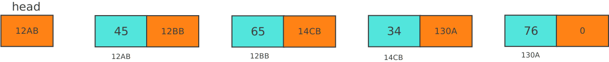
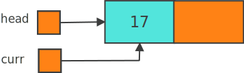
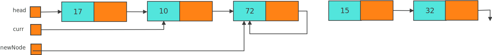

Linked Lists
1 Abstract data types(ADT)
Abstract data types are ways of representing abstract information. Its basically a specification of a set of data, and a set of possible operations that can be performed on that data. They are meant to be a representation of certain types of data from the point of view of the user of this data.
For example, we’ve just completed the EasyList assignment in which we created a list data type. In the back end, we used an array to store this list. However, on the front end (in the ListTest.java), we only had access to specific functions and methods that allowed us to manipulate the list in specific ways.
So a list is an example of an abstract data type. In our assignment, it only stored integers (so its set of data is integers), and the possible operations that we could perform on that data were deletion, insertion, initialization, e.t.c.
Typical list operations include - initialization - determining whether the list is empty - displaying the list - finding the length of the list - retrieving information stored in the first element - retrieving information stored in the last element - searching the list for a given item - inserting an item into the list - deleting an item from the list - making a copy of the list In that assignment, we used arrays to implement the backend of this abstract data type but there are some shortcomings with that approach, chief of which is the inability of the list to grow to whatever size is necessary. Recall that we had a maximum size of the array, and that even if our list had fewer items, the computer technically had set aside the maximum size for our list. Additionally, if our list was full, there was no way to increase its size during run time.
Another way of implementing the list is using what are referred to as linked lists. These lists use references ( referred to as pointers in other languages), to allow the list to grow and/or shrink as needed. Additionally, linked lists don’t have to be stored in contiguous memory locations.
2 Linked Lists
A linked list is a versatile general purpose storage data structure. It is made up of components called nodes. Every node in a linked list is made up of two parts: the relevant data that it is trying to store, and the address of (or a link to) the next node in the list. All nodes, except the last, will point to the next node using that link. The address of the first node is stored in a separate location called the head or first. The diagram below is a pictorial representation of a node.
The diagram below is the pictorial representation of a linked list. The arrow in each node shows that the address of the node being pointed to by the arrow is stored in that node i.e. it shows the node that is being referenced or pointed to by the address in the link section of the given node. The down arrow in the last node indicates that its link field is null.
In reality, the linked list looks more like the diagram below where the link portion of the node stores the address of the next node.

What about in code? What does a node look like in java. We’ll use a simple node where the data is an integer,and therefore our linked list will store multiple integers.
class Node
{
private int data; //data is an integer.
private Node link; //link is a reference to another Node.
public Node()
{
this.data = 0;
this.link = null;
}
// and now for accessors and mutators
public int getData()
{
return this.data;
}
public void setData(int value)
{
this.data = value;
}
public void setLink(Node n)
{
this.link = n;
}
public Node getLink()
{
return this.link;
}
}
Node head; // head node created in another class/function.2.1 Adding a node to the list
Let’s see how we would create the list and add a node to it, and how it would look like diagrammatically.
| Code | Diagram |
|---|---|
Node head; Node curr; |
|
head = new Node(); |
|
head.setData(17); |
|
curr = head; |
 |
curr.setLink(new Node()); curr = curr.getLink(); curr.setData(10); |
|
curr.setLink(new Node()); curr.getLink().setData(15); |
|
curr.getLink().setLink(new Node()); curr.getLink().getLink().set Data(32); |
|
curr = curr.getLink().getLink(); |
A few things to note about the code and diagrams above. - One creates a new node using the new keyword. - The links are one direction i.e. the address of the second is stored in the first, the address of the third is stored in the second, etc. Once the pointer has moved to the next node, there is no way of going back to the previous node unless you had either stored its value somewhere else, or you began from head again.
2.2 Traversing the list
Recall that we can only move down the list in one direction. Typically, the link of the last node of the linked list will be null. We can use these properties to traverse the list. This comes in handy in scenarios, such as when one wants to print out the contents of the list starting with the head.
Node curr = head;
while(curr != null)
{
System.out.print(curr.getData() + “ “);
//This could be any process that you want to do
//with each node.
curr = curr.getLink();
//AND then you have to move curr to the next
//node using curr's link.
}
System.out.println(); //Any process to be done after traversing the
//list2.3 Inserting items into the list
So far we’ve seen how to add nodes to the end of the list. That process involves creating the node and storing its address in the link section of the last node in the list.
Adding a node to the middle of the list is slightly different because we have to maintain the integrity of the list on both sides of the node that we are inserting.
We shall look at the lines of code to insert a node after curr and how it looks diagrammatically.
| Code | Diagram |
|---|---|
Node newNode = new Node(); newNode.setData(72); |
|
NewNode.setLink(curr.getLink()); |
|
curr.setLink(newNode); |
|
//which is technically the //same as this diagram. |
The order in those statements is very important. We make our new node point to the next node in the linked list, and the make the curr node point to our new node.
Let us see what happens when we reverse that order.
| Wrong Code | Error Diagram |
|---|---|
Node newNode = new Node(); newNode.setData(72); |
|
curr.setLink(newNode); |
|
newNode.setLink(curr.getLink()); |
|
//which is technically the //same as this diagram. |
 |
Notice that when I reverse the order of the lines of code (as shown above), I add the node in the right place BUT I lose access to the tail end of the list.
Another way we can correctly add a node to list is by using two separate node references.
| Code | Diagram |
|---|---|
Node p, q; //assuming they are //both properly initialized //and positioned. |
|
Node newNode = new Node(); newNode.setData(77); |
|
//Now the order of //operation doesn't matter //as much p.setLink(newNode); newNode.setLink(q); |
|
//it produces the same //results if the order is //changed. newNode.setLink(q); p.setLink(newNode); |
2.4 Deleting items from the list
What about if we wanted to delete an item from the list. If the node we want to delete is the node after curr, we make curr point directly to the node that was pointed to by the node pointed to by curr. It sounds confusing but its really easy. If a pointed to b which pointed to c, we now just make a point to c. The code should make it clearer.
| Code | Diagram |
|---|---|
//assuming this is what the list looks like and we want to delete the node with 56. |
|
curr.setLink(curr.getLink().getLink()); |
Notice that the node with 56 is essentially deleted since there is no way to traverse to it. However, that memory still has information and is inaccessible to us i.e. the node is dangling. Java will eventually get rid of this using its garbage collection feature.
3 Building a linked list
Even though the last program we looked at built a linked list, we are going to discuss it in more detail so that we can build a linked list in general. The kind of linked list that we build will depend on the data that we are reading and want to store in the list. If it is unsorted, the linked list will be unsorted too. Such a list can either be built forwards or backwards i.e. appending new nodes to the end of the list, or attaching them to the beginning of the list.
3.1 Building forward
We will need three pointers to build the list: one to point to the first (or head) which should not be moved, one to point to the last (or tail) node in the list, and one to create the new node. In this example, we’ll call them first, last, and curr respectively.
Node first, last, curr;
int num;
…
first = null; //initially the list is empty and so we have to
last = null; //appropriately initialize first and last.
…
curr = new Node(); //create a new node
curr.setData(12); //store that input in the data portion of the node
…
//Now to add any kind of node to the list, we have to check to see whether the
//list is empty or not. If it is empty, we have to change both first and last,
//Otherwise, we only have to change last.
if(first == null)
{
first = curr; //If it is empty, we have to change both first and last
last = curr; //to point to the new and only node in our list
}
else
{
last.setLink(curr); //Otherwise, we have to change the old last to point
last = curr; //to the new node, and change last to point to the
} //new last node.The code above can be put into a loop to create the list in the forward direction. The **last* pointer allows us to insert the new node in the proper position without having to traverse the list for every node insertion. Without it, we would have to traverse the list from beginning to the end before inserting the node. It should be obvious that this becomes very inefficient as the size of the list grows.
3.2 Building backward
When building backward, we insert the new node at the beginning of the list. We therefore do not need to have last BUT we’ll need first. BTW, It will always keep changing with each insertion.
Node first, curr;
int num;
…
first = null;
…
curr = new Node();
curr.setData(10);
curr.setLink(null);
…
curr.setLink(first); //make the new node point to the old first
first = curr; //Then change first to point to the new node.4 Complexity of Linked lists.
So what are the big-O notations for the basic operations of lists? • Insertion in an unsorted list doesn’t depend on the size of the list because we are always keeping track of the end of the list: \(O(1)\). • Deletion requires us to find the appropriate node first, and this grows linearly with the size of the list: \(O(n)\). • Searching through the list is similar to searching through an array: \(O(n)\). • Traversing the list takes longer if the list is longer: \(O(n)\).
Earlier we alluded to the idea of an ordered list. If items were kept in a specific order in the list, then insertion would NOT just be a matter of appending the node to the beginning or end of the list. Insertion would require us to search for the appropriate position before inserting it and therefore in the case of an ordered list, insertion is \(O(n)\).
5 Other kinds of linked lists
5.1 Doubly linked lists
Yes it’s a thing. Every node has two links instead of the more traditional one link. One of the links points to the next node, and the other link points to the previous node. Every node (except the last) will contain the location of the next node, and every node (except the first) will contain the location of the previous node. This allows us to traverse the list forward or backward using head, tail and the links.
With doubly linked lists, insertion and deletion typically require the modification of two nodes i.e. the preceding and proceeding nodes.
class Node
{
int data;
Node next;
Node back;
// accessors, mutators, and constructor missing.
}5.2 Circular linked lists
In this kind of linked list, the last node points to the first node. With circular linked lists, it is convenient to make first point to the last node of the list. That way, you have access to both the last and first (using first.getLink()) nodes with a single variable.